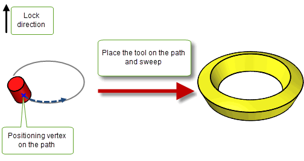
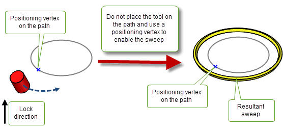
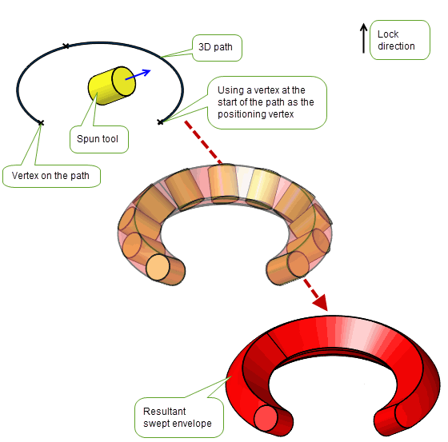
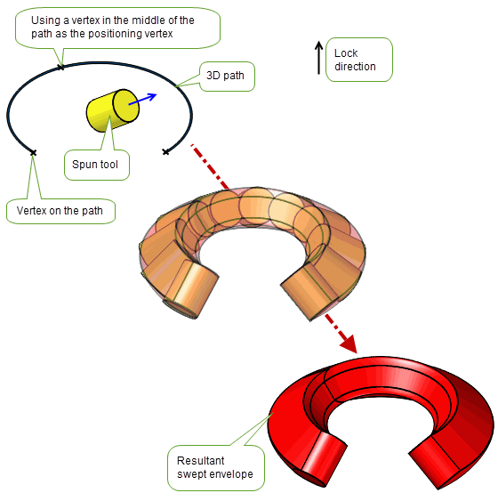
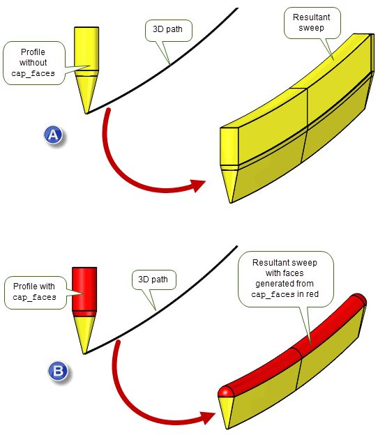
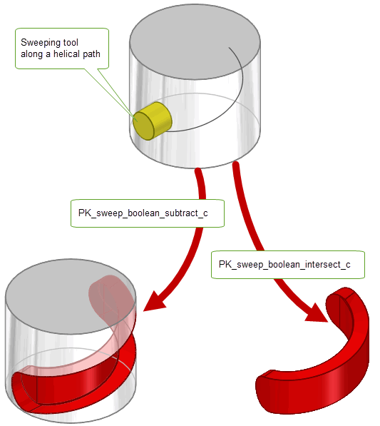

| |
Sweeping Tool Bodies Along a Path |
| <<< Sweeping | Chapters | Lofting >>> |
|
Note: Parasolid’s functionality to sweep a tool along a path is targeted specifically at CAM workflows. It is not intended for use as a general purpose 3D solid sweep algorithm. |
You can use this function to construct bodies that represent regions to be cut from a solid body using a machine tool. For example, you can create a region to be cut out using PK_BODY_make_swept_tool and then subtract this region from the solid body either using a boolean operation, as shown in
Figure 40-1, or the
sweep_boolean
option as described in Section 40.9, “Performing boolean operations with solid tool bodies”.
Figure 40-1 Creating swept bodies for use in cutting out regions from a body
For examples of this functionality, see the code examples in the
C++\Code Examples\Modelling\Profiling
folder in your Parasolid installation folder.
|
Note: This functionality does not support facet geometry. |
PK_BODY_make_swept_tool receives and returns the following arguments:
tool |
A tool body that is spun about the |
tool_axis |
An axis about which the supplied |
path |
A path for the sweep operation. See Section 40.3, “Specifying a path”, for details about the form this path should take. |
options |
A set of options. See Section 40.1.2, “Options available when sweeping tool bodies”, for details about the options available. |
tracking |
A structure containing tracking information that relates topology prior to the operation to the topology that is available after it. You can control the amount of tracking information returned: see Section 40.1.2, “Options available when sweeping tool bodies” for details. |
swept_tool |
A structure that combines the resulting swept |
PK_BODY_make_swept_tool contains an options structure that provides the following options:
tolerance |
The tolerance to which entities are approximated or assumed to be coincident. Default: 1.0e-5. |
allow_rationals |
Whether or not rational B-surfaces may be used in the resulting body. Default: PK_LOGICAL_true |
want_edge_tracking |
Whether or not tracking information for edges should be returned in the |
have_lock_direction |
Whether to use a lock direction for the sweep. If set to PK_LOGICAL_true, the sweep direction and the orientation of the tool are controlled by See Section 40.4, “Sweeping along 3D paths”, for more information. |
lock_direction |
The direction of the lock if See Section 40.4, “Sweeping along 3D paths”, for more information. |
tool_site |
A positioning vertex on the path that indicates the location of See Section 40.5, “Positioning the tool on or off the path”, for more information. |
n_cap_faces cap_faces |
An array of faces on the tool body whose precise geometry is not significant for downstream operations. See Section 40.7, “Simplifying faces of a swept tool body”, for more information. |
place_tool_on_path |
Whether the tool should be placed on the path before sweeping. Default: PK_LOGICAL_true. See Section 40.5, “Positioning the tool on or off the path”, for more information. |
sweep_boolean |
Specifies which boolean operation to apply to the sweep tool and |
target |
Specifies the target body to use when using a |
|
Specifies which type of corner to produce at non-G1 discontinuities in the path. Default: PK_sweep_corner_type_spin_c. See Section 40.8, “Specifying corner types” for more information. |
have_turn_axis |
Whether See Section 40.6, “Specifying that path edges lie on a spun surface” for more information. |
turn_axis |
See Section 40.6, “Specifying that path edges lie on a spun surface” for more information. |
turn_edges |
The path edges to which the See Section 40.6, “Specifying that path edges lie on a spun surface” for more information. |
update |
If your application uses models created using earlier versions of Parasolid, you can use the |
The
tool
supplied to PK_BODY_make_swept_tool has the following restrictions:
axis
as defined by the
tool_axis
. This is so that when the tool body is spun about the
axis
, the resulting cross-section forms a single connected set of curves for use as a profile during the sweep operation. (In other words, the profile body has no holes.)
It does not matter where the
tool
is located with respect to the
path
. By default, PK_BODY_make_swept_tool positions the
tool
so that the
location
of the
tool_axis
is on the specified
path
before sweeping. If you do not want to move the tool onto the
path
, you can set
place_tool_on_path
to PK_LOGICAL_false. See Section 40.5, “Positioning the tool on or off the path”, for more information.
The
tool_axis
defines the axis about which the tool body is spun. The tool does not need to be rotationally symmetric about the
tool_axis
. The shape of the resultant body can vary depending on the position of the
tool_axis
as illustrated in
Figure 40-2.
Figure 40-2 The effect that changing the location of the tool axis has on the result body
The
path
supplied to PK_BODY_make_swept_tool:
tool_axis,
unless a
lock_direction
controlling the orientation of the tool is supplied.
Note: If you are sweeping a tool along a path and the tool is not positioned on the path; then the
path
must be G1 continuous. See Section 40.5, “Positioning the tool on or off the path”, for more information. |
Figure 40-3 Forming swept bodies at G1-discontinuities on the path
|
Warning: You must not specify a wire path that consists of a single ring edge with no vertices. |
For non-planar paths or when the tool spin axis is not orthogonal to the path, you must supply a
lock_direction
to specify the orientation of the swept tool. It must be a unit vector and is used if
have_lock_direction
is PK_LOGICAL_true.
Figure 40-4 shows a cylindrical tool with a set
lock_direction
being swept along a 3D path.
Figure 40-4 Sweeping along a 3D path
|
Note: For 3D paths, the path curve cannot be an SP-curve. |
The
lock_direction
does not have to be in the same direction as the
tool_axis
and their relative directions can affect the overall shape of the result.
Figure 40-5 (a) shows the result when the direction of the
lock_direction
and
tool_axis
are the same, and (b) shows the result when the direction of the
lock_direction
is different to that of the
tool_axis
.
Figure 40-5 Difference in the shape of the result body when the direction of
lock_direction
is the same (a) and different (b) to the direction of
tool_axis
Using the
place_tool_on_path
option, you can choose whether or not to place the tool on the path before sweeping. When set to PK_LOGICAL_false, the tool will not be moved onto the path and will be swept from its initial position if the following conditions are met:
tool_site
specifies a positioning vertex for the path which indicates the location of
tool_axis
and enables the body to be placed on the path for sweeping.
tool_axis
intersects the plane perpendicular to the sweep direction at the
tool_site
taking any
lock_direction
specified into account.
path
is G1 continuous.By default, the tool will be moved onto the path before it is swept. The results of both values are illustrated in Figure 40-6 and Figure 40-7.
Figure 40-6 Sweeping a tool that lies on the path
Figure 40-7 Sweeping a tool that lies off the path
Any vertex on the path can be used as a positioning vertex. Figure 40-8 and Figure 40-9 show how the location of the positioning vertex on the path can affect the overall shape of the resultant swept profile.
Figure 40-8 Sweeping along a path using a vertex at the start of the path as a positioning vertex
Figure 40-9 Sweeping along a path using a vertex in the middle of the path as a positioning vertex
Note: If
lock_direction
is not the same as the direction of
tool_axis
,
tool_site
must be used. |
You can use the
have_turn_axis,
turn_axis
, and
turn_edges
options to specify a subset of the path that is considered to turn around the
turn_axis
. Specifying these options can improve the quality of the resulting swept body, for example when simulating lathing and turning operations.
If
have_turn_axis
is PK_LOGICAL_true:
turn_edges
are treated as lying on a body spun around the supplied
turn_axis
. The tool motion of the sweep corresponding to these edges will be determined using the
turn_axis
together with the radial directions from
turn_axis
.
turn_axis
must lie in the same direction as the
lock_direction
.
Figure 40-10 Specifying the
turn_edges
in the sweep operation
If there are faces on the tool body whose precise geometry is not significant for downstream operations, they can be supplied as
cap_faces
to enable Parasolid to generate simpler geometry for these faces. These cap faces are often used to close off the tool volume or to represent the shaft of the tool.
Figure 40-11 (a) shows a tool body sweep without
cap_faces
supplied.
Figure 40-11 (b) shows the same tool body sweep where the faces coloured red in the tool have been supplied as
cap_faces
. Parasolid geometrically simplifies these
cap_faces
to a spherical face that is smoothly joined to the tool and the sweep operation proceeds with this remodelled tool.
Swept faces generated from
cap_faces
are returned in a Parasolid Report of type PK_REPORT_record_type_3_c with a status of PK_REPORT_3_sweep_tool_cap_c. This contains a PK_sweep_tool_cap_t status to indicate whether the swept tool volume is either enclosed (PK_swept_tool_cap_enclose_c) or undercut (PK_sweep_tool_cap_undercut_c) by the simplified cap geometry.
See Chapter 11, “Using Reports”, for more information about the Parasolid report mechanism.

Figure 40-11 Sweeping a tool body with and without supplying
cap_faces
Note: Faces whose precise geometry is significant for downstream operations must not be supplied as
cap_faces
. |
When the sweep path is not G1-continuous, you can choose to produce either a rounded or mitred corner at each sharp corner on the path using the
corner_type
option. By default, rounded corners are produced. When set to PK_sweep_corner_type_mitre_c, each section of the sweep is linearly extended to produce mitred corners.
|
Note: If the value is set to PK_sweep_corner_type_mitre_c, the path must be planar and lie in a plane orthogonal to the tool axis. If you are using a lock direction for the sweep, it must be parallel to the tool axis. |
Figure 40-12 Producing rounded or mitred corners when sweeping with a tool body
As discussed in Section 40.1, you can use PK_BODY_make_swept_tool to construct bodies that represent regions to be cut from a solid body and then use Parasolid’s boolean operation to subtract the specified region from the solid body. See Chapter 53, “Manifold Booleans” for more information on boolean functionality.
Alternatively, you can perform both the sweep and boolean operation in one function call, using the
sweep_boolean
option in PK_BODY_make_swept_tool. When simulating lathing operations for example, the volume of interest is often the volume remaining after removal of material from the target body. In these circumstances, setting the
sweep_boolean
option allows the complexity of the modelling operations to be reduced.
To use this functionality you must specify an appropriate target body in addition to the chosen boolean operation (either subtract or intersect) using the
sweep_boolean
option. This takes the following values:
|
Subtract the swept tool from the chosen target body to create the result body. |
|
|
Intersect the chosen target with the swept tool to create the result body. |
|
Note: Only solid body targets are supported for this functionality |
Figure 40-13 shows an example of this functionality. When
sweep_boolean
is set to PK_sweep_boolean_subtract_c the swept tool volume is subtracted from the specified target body to create a result body. When set to PK_sweep_boolean_intersect_c the specified target volume is intersected with the swept tool to create a result body
With this option, the boolean operation occurs immediately after the swept tool has been swept along its path and the swept tool returned is the target body which is the result of the boolean operation between the sweep and boolean combination.
Figure 40-13 Performing boolean operations with a swept tool body
| <<< Sweeping | Chapters | Lofting >>> |